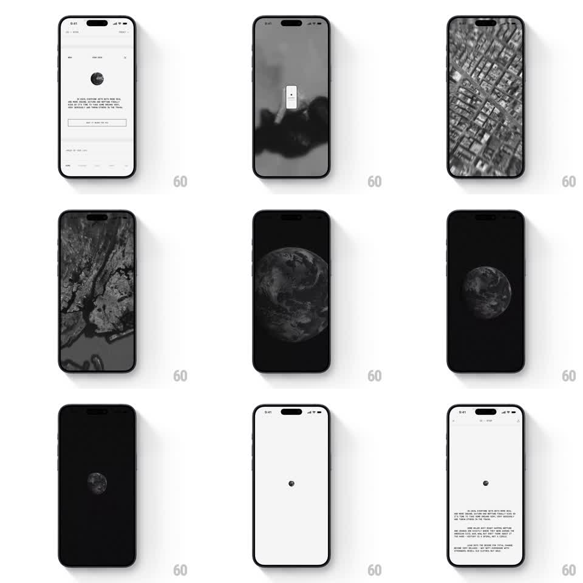

Media
Frame-by-frame

Rebuild this animation 1:1: Co-Star's cinematic zoom-out - from a street-level aerial view the camera pulls back through city and region to the whole Earth on black, shrinking to a dot that lands back on the white page.

Rebuild this animation 1:1: Co-Star's cinematic zoom-out - from a street-level aerial view the camera pulls back through city and region to the whole Earth on black, shrinking to a dot that lands back on the white page. ## Integration Integration: stack-agnostic spec - springs given as stiffness/damping, timed motions as duration + curve; map every value to your framework and animation library of choice. ## Scene Co-Star, monochrome: the sequence runs street aerial -> city grid -> region -> full globe on black -> globe shrinking to a tiny dot -> the dot becoming the small globe icon on the white reading page (dense serif paragraph, close button). ## Motion spec Pattern: continuous exponential zoom-out from street to planet. - The zoom is one uninterrupted exponential pull-back over ~4s: street-level aerial imagery scales away, crossfading between altitude levels (street -> city -> region -> limb of the planet) so scale never visibly jumps. - The frame darkens as altitude increases: streets sit on near-white, the globe floats on pure black (exposure tween synced to altitude). - The globe keeps shrinking past comfort - down to a ~24px sphere, then a 6px dot at screen center (the last 1.2s is just shrink on black). - The dot crossfades into the white page's inline globe glyph (200ms) as the page fades up around it (300ms) - the cosmic dot becomes the page's own icon. - Total one-shot sequence; no loop, no user control. ## Calibration - Everything is grayscale - Co-Star's monochrome discipline never breaks. - Zoom easing: linear in log-space (constant rate of scale change) - the hallmark of a proper powers-of-ten pull. ## Reduced motion Cut directly from the first aerial frame to the white page with a 400ms crossfade. ## Don't miss - The pull-back never pauses at any altitude - no staged stops. - The final dot must be centered exactly where the page's globe glyph sits - the handoff position is the trick.